01开源第一次追到闭源门口
10 月 24 日凌晨，月之暗面放出 Kimi K3.1 Pro。官方口径 3 万亿级参数，Artificial Analysis 实测 2.8 万亿总参、1040 亿激活，100 万 token 上下文。
真正值得看的只有一个数字。在 Artificial Analysis 智能指数上，它拿到 55 分，全球第 4，排在前面的只剩 Claude Opus 5.5 的 58 分。
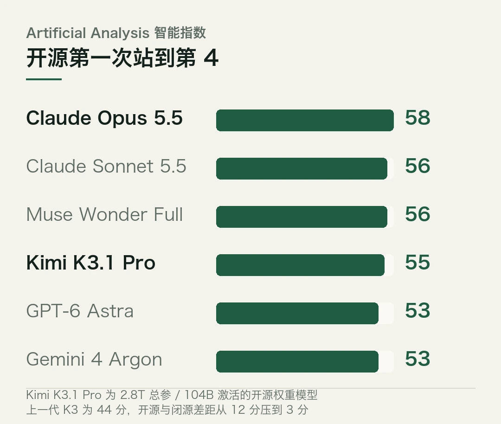
3 分。放在一年前，这个差距是 12 分。
追平的方式很关键。它不是在数学题上刷高分，是在编程和长程智能体这两个最吃工程的维度上咬住了对手，而且成本低七成。
- 智能指数 55 分，全球第 4，距 Claude Opus 5.5 的 58 分只差 3 分。
- 开源与闭源的差距，从 12 分压到 3 分。
- Terminal-Bench 4.0 官方口径 65.7%，距 Opus 5.5 的 66.4% 只差 0.7 个百分点。
- 定价每百万 token 输入 2 美元、输出 10 美元，比上一代降 33%，约为 Opus 5.5 的一半。
- 完整权重承诺 11 月 4 日前放出，现在所有分数都是厂商自测。
一、3 分和 12 分，差在哪
先看这 3 分是怎么来的。凑近看，比想象的结实。
上一代 Kimi K3 在同一份榜单上是 44 分左右，这一代 55 分，涨了 11 分。同期的闭源前沿基本没动。一进一退，差距就从 12 分压到 3 分。
更细的排位是这样。Claude Opus 5.5 拿 58，Claude Sonnet 5.5 和 Meta 的 Muse Wonder Full 都是 56，再往下是 GPT-6 Astra、Gemini 4 Argon、Claude Fable 5.1，都是 53。
第三梯队和第二梯队之间，只隔着这两档。
Kimi K3.1 Pro 的 55 分，夹在第三梯队和第二梯队之间。前面只剩三个模型。
如果只看综合分，这件事像个营销数字。换到具体任务上呢？分量就不一样了。
Terminal-Bench 4.0 考的是资源受限终端里的编程智能体。
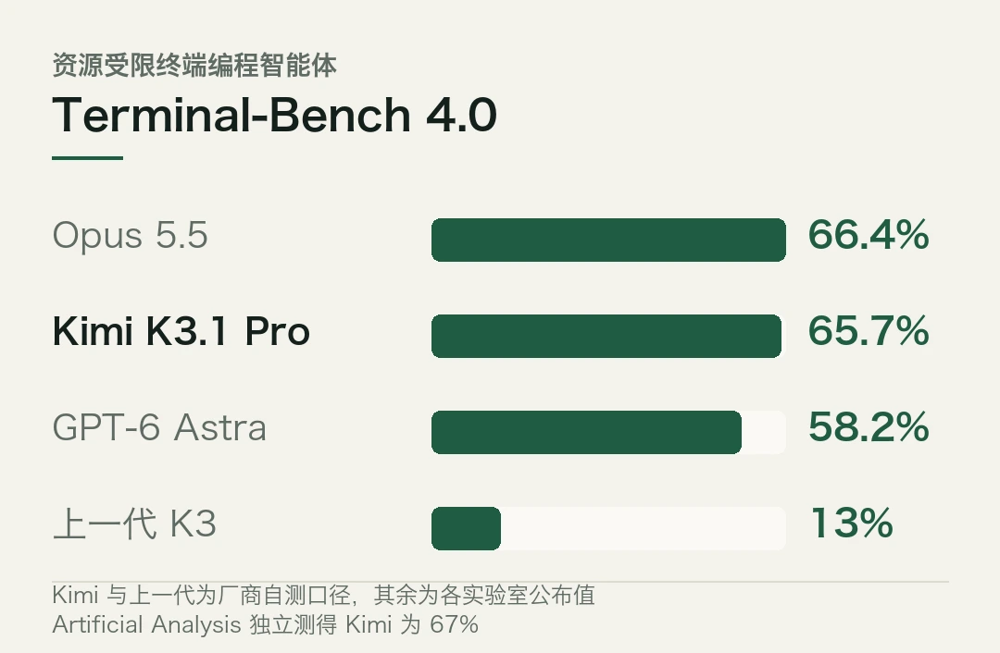
月之暗面自己跑出 65.7%，GPT-6 Astra 是 58.2%，Claude Opus 5.5 是 66.4%。0.7 个百分点。Artificial Analysis 独立测出来是 67%，而上一代 K3 在这个榜上只有 13%。
GDPval-AA 的 Elo 是 1846，排第 3，仅次于 Opus 5.5 的 1866。Code Arena WebDev 拿到 1692 分，和 Opus-5 打平，成本低约七成。
编程和长程智能体，是大模型最吃工程能力的两个方向。刷数学题刷不出这两项。
这里有个对照。一年前的开源模型和闭源前沿，差距主要体现在综合知识和长程推理上，靠堆数据能追。编程和智能体不一样，它考的是多步规划、工具调用、出错之后自己纠，这些没有捷径，只能一版一版磨。
差距从 12 分压到 3 分，难的地方在于，这 3 分是在最难的维度上追出来的。
二、那个走了 167 次的模拟人
月之暗面给了一个例子，比任何跑分都直观。先记着这个例子，后面讲复现门槛时还会用到。
他们让 K3.1 Pro 从一个公开的人体解剖模型出发，让一个模拟人学会走路。模型有 296 块骨骼、402 条肌肉。
前几轮，模拟人几秒钟就倒下。
模型一共执行了 167 个任务。到后面，模拟人能连续走 11.2 秒。调奖励调不动了，它转而去查模拟器本身，找出并修掉了 36 处肩部肌肉的计算错误。
这个例子说明了长程智能体和上一代的区别。它不是在一个回合里给出一个答案，是在几百步里自己判断该看什么地方。奖励函数不好使了就换目标，这种转向以前很少见。
顺带看一个结构性的数。总参 2.8 万亿，激活 1040 亿，激活率 3.7%。这个比例不算低，意味着单次推理实际调用的参数比看上去多，部署时的硬件门槛也跟着上去。
官方还报了另外两个数。金融场景的 Business Operation 从上一代的 8.9 涨到 37。幻觉方面，Kimi Hallu Bench Hard 上错误声明的比例从 23.4% 降到 8.3%（带工具时），Artificial Analysis 的 AA-Omniscience 上是从 53% 降到 44%。
三、它自己砍掉了网络安全能力
这一条是发布里最该被划重点的。
月之暗面说，训练过程中他们观察到漏洞研究类得分随着后训练规模一起涨，追下去发现来源有两个：通用训练数据里的网络安全内容，和强化学习任务池里的网络安全任务。
为了开源版本，他们把两样都撤了。
代价是量出来的。在内部漏洞编写测试 xdev-bench-hard 上，同样一个 checkpoint 不做撤除能解出 90.5% 的问题，最终发布的 K3.1 Pro 是 81.0%。
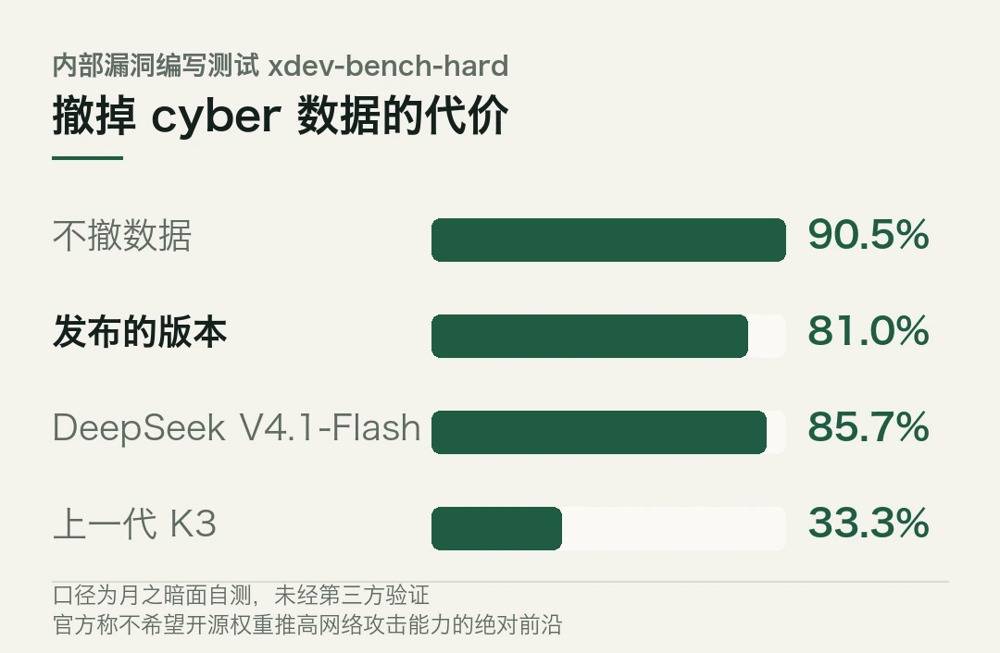
上一代 K3 是 33.3%，DeepSeek V4.1-Flash 是 85.7%。
也就是说，撤了数据之后它仍然比上一代强得多，但比自己本可以成为的样子弱了将近 10 个百分点。
官方的原话意思很明确，不希望开源权重把网络攻击能力的绝对前沿往外推。
这是开源模型第一次在能力上做这种取舍。以前厂商也裁剪能力，但多数是模型本来就不擅长某类任务，顺势说成「我们不做」。这次是能力够、主动砍，还把砍掉的代价一起公布。
同一个发布里还有一处克制的设计。企业版默认关闭 K3.1 Pro 的访问，要管理员主动打开。默认值放在安全那一侧。
两处放在一起，取舍逻辑是完整的。能力上逼近前沿，风险上自己划线，连划线的代价一并公布。开源模型开始具备「可声明的风险边界」这个东西了。
四、11 月 4 日之前，都还是宣传
有几件事必须说清。
第一，权重还没放。完整权重承诺 11 月 4 日前给出，现在所有分数都来自月之暗面自己的测试，第三方只有 Artificial Analysis 一家。Terminal-Bench 那个 65.7% 是官方用 Claude Code 的 harness 跑的，和其他实验室公布的口径不完全一致。
第二，它是 K3 的后训练版本，不是新架构。11 分的涨幅主要来自大规模强化学习，跨几百个领域同时训。这意味着分数涨得快，复现门槛在算力而不在方法。
第三，定价要拆开看。每百万 token 输入 2 美元、输出 10 美元、缓存命中 0.2 美元，比上一代降 33%，和 GPT-6.1 Sol 基本持平，约为 Opus 5.5 的一半。但 Artificial Analysis 算过，完成一轮评测任务的实际花费是 1.98 美元，和上一代基本持平，因为新模型平均多用了约 14% 的输出 token。单价降了，总账没降多少。
第四，Highspeed 版本速度快 2 到 3 倍，代价是配额消耗变成两倍。
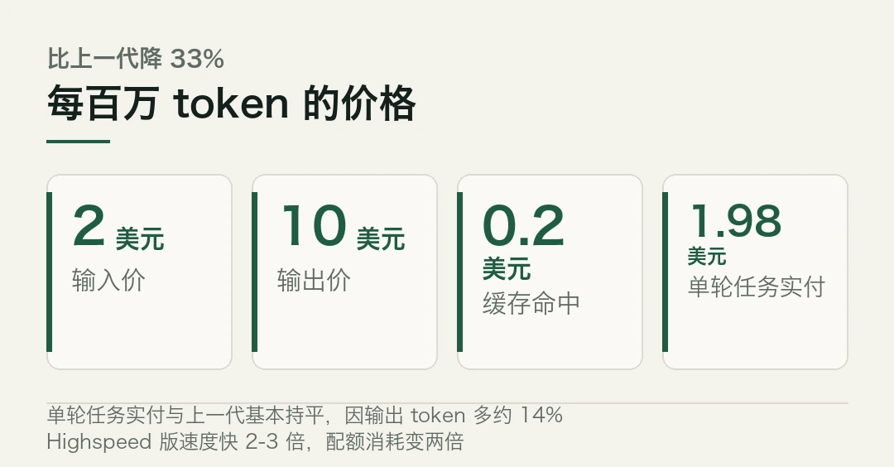
还有一层，11 月 4 日权重落地之后才会显现。
现在所有分数都是在月之暗面自己的服务上跑的。权重公开之后，开发者和云厂商可以把它搬进自己的机房和芯片。那时候才会知道，它在国产算力上跑得怎么样，量化之后掉多少，长上下文场景的显存实际吃多少。
这些数字比榜单分数更决定它能不能真的被用起来。一个模型的实际价值，评测说了不算，部署说了算。
所以现在该记住的，是那个 3 分。开源模型第一次站到了闭源门口的台阶上，而且站的是编程和长程智能体这两级。
至于它是不是真的能进门，等 11 月权重落地、各家在自己机房和芯片上跑起来才算数。
本文信息来源
- 月之暗面官方 — Kimi K3.1 Pro 发布（2026-10-24） · kimi.com
- Simon Willison — Kimi K3.1 Pro（2026-10-23） · simonwillison.net
- AI Chat Daily — Moonshot releases Kimi K3.1 Pro, an open-weight model with a 1M-token context（2026-10-24） · aichatdaily.com
- Think Facility — Moonshot's Kimi K3.1 Pro lands just behind Claude Opus 5.5, with open weights due November 4（2026-10-24） · thinkfacility.com
- 博客园 — AI 技术日报 2026-10-24（2026-10-24） · cnblogs.com
- 月之暗面技术博客 — Advancing Open Intelligence（2026-10-24） · moonshotai.github.io
02所有框架的 softmax 都有 bug
Jon Barron 10 月 22 日贴出一篇论文，标题很直接，A Fix for Softmax and Cross-Entropy。
核心结论一句话，所有主流深度学习框架的 softmax、log-softmax 和交叉熵实现里，有两个数值 bug。
不是精度不够好。是 bug，带具体可验证的数字。
最刺眼的一个，在 fp32 下，当目标 logit 比其他高出一个叫 margin 的量、超过 16.6 时，交叉熵损失会精确变成 0，目标类别的梯度也会精确变成 0。
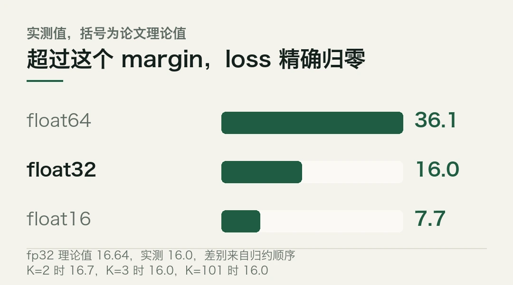
损失等于零。一个训练中的模型，某一项突然不产生任何梯度了。
这个 bug 有个讽刺的触发条件，模型训练得越好、对正确答案越自信，越容易踩进去。而自信，正是训练想要的结果。
- 两个 bug，Softmax Collapse 与 Softmax Cancellation，遍布 JAX、PyTorch、TensorFlow。
- 精度悬崖，bf16 约 margin 5.5，fp32 约 16.6，fp64 约 36.7，超过后 loss 与目标梯度精确归零。
- 有人用 NumPy 一个下午就复现了，不需要任何框架。
- 修复后 Slingshot 现象消失，grokking 变快，无 weight decay 时不再崩。
- 悬崖的具体位置不是常数，取决于你机器的归约树。
一、bug 是怎么来的
要理解这个 bug，得先看一个所有框架都在用的老技巧。
直接算 softmax 会溢出。`e^{z_k}` 在 fp32 下只要某个 logit 超过 88 就爆。所以二十多年来，所有实现都先把 logits 减去它们的最大值 `z_max`，再算指数。
这个技巧出自 Higham 2002，是标准操作，教科书级别。
麻烦在于，问题出在减完以后。
设目标类就是最大值那一类。减完之后它的 logit 变成 0，其他类变成负数。记 margin `m` 为目标 logit 高出其余之和的程度，那么损失是 `log(1 + e^{-m})`。
浮点数在 1.0 附近是很粗的。fp32 里，比 1.0 的半个 ulp（约 5.96e-8）还小的数，加到 1.0 上会直接消失。
于是当 `m` 大到让 `e^{-m}` 小于这个阈值，`1 + e^{-m}` 就被舍入成精确的 1.0。损失 `log(1)` 精确等于 0。
反向传播算目标梯度时，标准实现走的是 `q_t = 1/(1+e^{-m})`，分母舍入成 1，`q_t` 就算成 1，再减 1，梯度精确等于 0。
但非目标梯度不走这条路。它算的是 `e^{z_j - z_t}`，分子直接由负差得出，一路准到指数下溢。分母同样是那个被舍入成 1 的 `1 + e^{-m}`。
结果是，只有目标那一项被抹掉，剩下 K 减 1 项全都留着。梯度向量不再加起来等于零了。
它等于被删掉的那一项。
二、悬崖在哪儿，以及它为什么不是常数
论文给的悬崖位置是 margin 5.5（bf16）、16.6（fp32）、36.7（fp64）。
有人独立测了一遍。用的只有 NumPy 1.26.4，不涉及任何框架，梯度直接解析算成 `q - p`，跟框架反向传播算的是同一个东西。一个下午。
测出来是这样。fp16 在 margin 7.7 首次归零，理论值 7.62。fp32 在 16.0，理论值 16.64。fp64 在 36.1，理论值 36.74。
接近，但不重合。差别比数字本身有意思。
论文的悬崖假设 `e^{-m}` 是在一次加法里撞上 1.0 的。真实的归约里，这一项是拆成若干份、分别送到 1.0 面前的，每一份单独跟半个 ulp 比。
换了类别数再测，fp32 下两个类是 16.7，三个类是 16.0，十一个类是 15.8，一百零一个是 16.0。
最能说明问题的是这个小实验。同样三个数，顺序不同，结果不同。
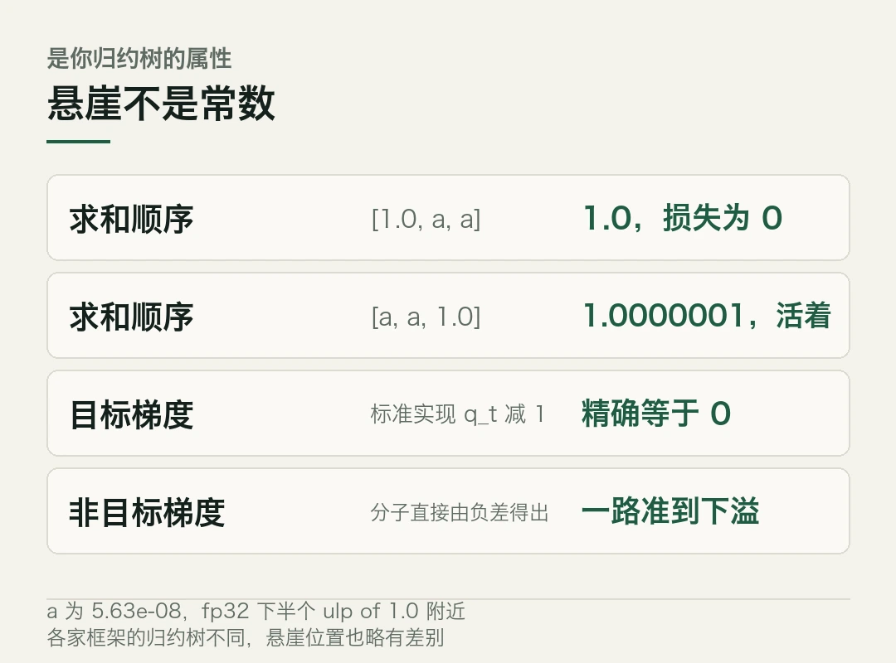
```python
# 示意：同一个 margin，归约顺序决定谁被舍掉a = 5.63e-08 # fp32 下半个 ulp of 1.0 附近sum([1.0, a, a]) # → 1.0 损失精确为 0sum([a, a, 1.0]) # → 1.0000001 损失为 1.19e-07，活着```
同一个 margin，同样三个数。一个死一个活。
所以「fp32 的悬崖在 16.6」不是自然常数，是你这台机器上归约树的属性。顺序求和还是两两求和、kernel 怎么切块、多少个类别，全都影响。论文那个 16.6 是两类的理想值。
各家框架各有自己的一棵归约树。换句话说，各自的悬崖位置略有不同。这话听着像废话，落到排查上就是要逐台机器测。
三、第二个 bug 藏在蒸馏里
第一个 bug 的触发条件是某个 logit 特别大。第二个 bug 相反，要求两个分布特别接近。
知识蒸馏里，教师的 logits 算出目标分布 `p`，学生的算出 `q`，损失一般是 `q - p` 在 log 空间比。
标准实现是分别算 `softmax(z^S)` 和 `softmax(z^T)`，再相减。学生和教师接近时，两个概率也接近，相减就丢精度。更麻烦的是前向用的 softmax 公式和反向用的 log-softmax 公式略有差别，两边的舍入方式不一样。
结果是，即使学生和教师的 logits 完全相等，梯度也不是零。
论文的修法是从 `z^S - z^T` 直接在 log 空间算 `q - p`，绕开那两次相减。
第一个 bug 的修法则更简单。把 `-e^{-m}/(1+e^{-m})` 这个形式用上，让 `e^{-m}` 留在分子里。分母就算被舍入成 1.0，除下去之后 `g_t ≈ -e^{-m}` 仍然保留，一直撑到指数下溢，margin 到 88 左右。
都是几行的改动。
四、改了之后，训练现象会变
论文报告的变化比 bug 本身更值得注意。
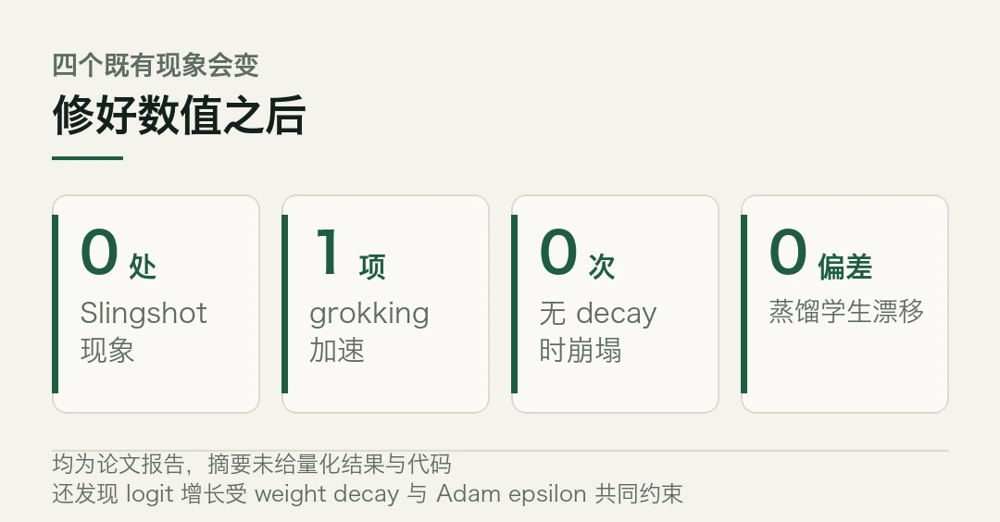
消除 Slingshot 现象。这个现象以前被观测到、被写成论文、被当作训练动态的特征。如果修一下数值实现它就消失，那至少有一部分 Slingshot 观测，依赖的是数值误差。
有 weight decay 时，grokking 变快。没有 weight decay 时，准确率不再崩。
蒸馏时学生不再偏离教师。
还有一个附带发现。记忆完成之后，logit 的增长受 weight decay 和 Adam 的 epsilon 两个超参共同约束，存在一个平衡点。epsilon 从「一个小修正项」变成了决定 logit 最终落在哪儿的一个设定。
这几条如果都成立，意味着什么？一批既有结论要重新过一遍。凡是基于 Slingshot、基于无 weight decay 时的崩塌、基于蒸馏里学生漂移写的工作，都得回头看看自己测的是模型还是数值瑕疵。
五、现在能信到什么程度
先泼两盆水。
论文是 v1，10 月 22 日贴出来，目前只有摘要。没有量化结果，没有点名任何框架，没有给出代码。有人照摘要的描述在自己的栈上测出了那两个 bug，但修复后能不能改善生产规模的最终模型质量，摘要没有回答。
第二盆水更现实。这两个 bug 要触发，需要 margin 足够大。短训练、弱模型、数据噪声大的场景，margin 根本长不到 16.6。这也是为什么它活了二十多年没人管。
但它在那儿。而且越是大规模、长训练、高置信度的任务，越躲不开。
论文给的三个自测动作可以直接用。给蒸馏损失写个测试，喂完全相同的学生和教师 logits，断言梯度精确为零，非零就说明中招。再喂一行目标 logit 远大于其余的，看目标梯度是否为零、logit 梯度是否和为零。两个都过，就换上论文的实现，重跑。
先记着这个顺序。不是先修，是先测。
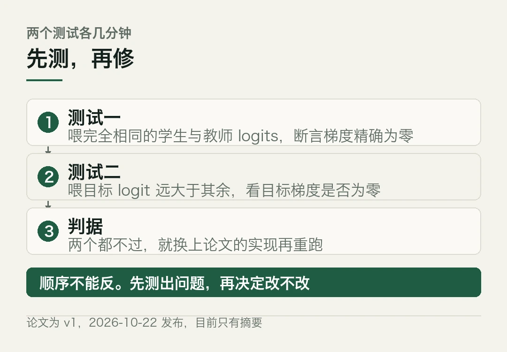
本文信息来源
- Jon Barron — A Fix for Softmax and Cross-Entropy（2026-10-22） · arxiv.org
- Jon Barron 个人页 — softmax 修复说明（2026-10-22） · jonbarron.info
- DEV Community — I measured softmax's precision cliff. In fp32, cross-entropy returns exactly zero at margin 16（2026-10-23） · dev.to
- samcodeman.com — Softmax Collapse zeroes the target gradient in standard cross-entropy code（2026-10-23） · samcodeman.com
- Vuink — A Fix for Softmax and Cross-Entropy 全文摘录（2026-10-23） · vuink.com
- AI 日报 — arXiv 论文修复标准 Softmax 与交叉熵数值缺陷（2026-10-24） · ai225.com
031000 亿融资，要拿资源换
DeepSeek 这一轮融了约 1000 亿元人民币，约合 150 亿美元。单轮规模在中国 AI 行业里排在最前面。
钱不是这条新闻里最特别的部分。
据证券时报从一级市场投资人处确认，DeepSeek 对投资方提了一条明确要求。得书面说明自己能提供什么训练数据和业务协同。
换句话说，想进场先交一份资源清单。这话听着硬，做起来是另一回事。
一、钱从哪儿来，要到哪儿去
先把账摆开。
这一轮的领投方是宁德时代和腾讯控股。老股东里 IDG、砺思、拾象继续跟投。新进来的一批几乎全是产业资本，联想系君联资本、兆易创新系石溪资本、吉利汽车产业基金、中芯聚源、横店资本。
融资目标一路上调。最初定的是 500 亿元，后来提到 800 亿元，最后落在约 1000 亿元。
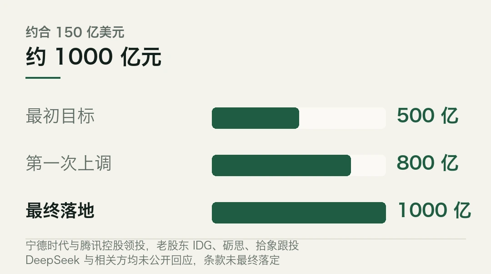
资金用途据说是三块，模型训练、算力建设、人才招募。
DeepSeek 和腾讯等相关方都没有公开回应。多家信源交叉求证，消息本身可信度不低，但最终金额和条款还没完全落定。
二、「拿资源换」是什么意思
这条要求值得单独说。
通常的融资逻辑是，投资人出钱，拿股权，剩下的看创业团队自己发挥。最多在董事会上提提建议。
DeepSeek 把顺序倒过来了。你想投，先讲清楚你能带来什么。训练数据、业务场景、产业协同，写成书面材料。
这不是刁难。对一个模型公司来说，数据和场景比钱稀缺得多。算力能买，人才能挖，领域数据和真实场景买不来。
可凭什么？这里有个不言自明的答案。算力可以买，人才可以挖，高质量的领域数据和真实业务场景买不来。
宁德时代和腾讯领投，这个组合本身就说明了问题。一个给制造业场景和工业数据，一个给云和流量入口。
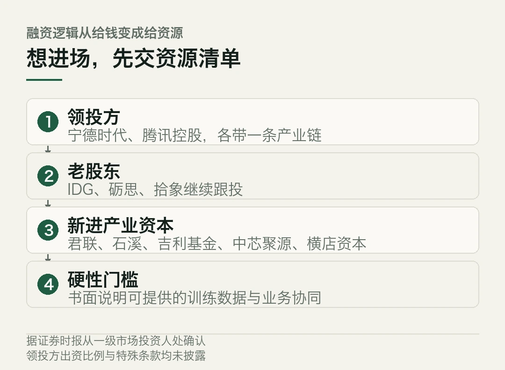
投多少是一个维度，能带什么是另一个维度。
有报道提到 DeepSeek V4 模型的毛利率在 70% 到 80% 之间。如果这个口径准确，说明它的单位经济模型已经跑正，那它挑投资人的底气就更足了。
不过这个数字来自二级转述，没有官方确认。
三、二级市场的水，正在往一级市场的池子里引
这条新闻还有一层，藏在几家 A 股公司的公告里。
完美世界披露了两只专项基金，「砺思星深」规模 75.20 亿元，「拾象尚势」规模 36.50 亿元，两只都已完成全额募集，合计吸纳外部资金 111.70 亿元。
世纪华通的全资子公司出资 6.5 亿元，认缴拾象尚势的份额。
算力服务商利通电子 10 月 22 日公告，出资 9500 万元认购砺思星深的份额。
注意这个结构。这些公司没有直接投 DeepSeek，它们投的是专项基金，基金再去投。钱绕了一道。
绕这一道，好处是门槛低了。9500 万和 6.5 亿，都够不上一线 AI 公司的直投门槛。做成基金份额，中小体量的上市公司也进得来。
代价是链条变长。风险传导慢，退出也更麻烦。但水引进来了。
这里有个容易被忽略的效果。基金结构把一笔大额投资拆成了许多小份，每份的名义风险敞口变小，于是更多公司敢进。同样的总金额，参与方数量比以前多。
这是金融工具在做它最擅长的事，把不可分割的机会切成可零售的份额。至于切完之后风险是不是真的分散了，那是另一个问题。
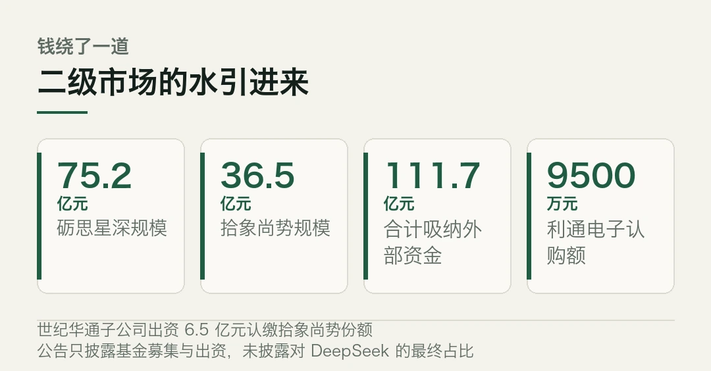
代价是链条变长，风险传导变慢，退出也更麻烦。但至少水引进来了。
四、这轮融资和以往的区别
往回看两年，AI 融资的主旋律是估值。谁估值高，谁拿钱多，融资额本身是新闻。
这一轮的三个信号都不是估值。
第一，规模翻着倍上调，但目标从 500 亿提到 1000 亿，靠的是投资人抢，不是公司吹。
第二，投资方结构从财务资本转向产业资本。新进来的这批，吉利、中芯聚源、兆易创新系，每家背后都是一条产业链。
第三，投资要附带资源承诺。这一步以前很少见，它把「战略投资」这个词从口号变成了可核对的条款。
共同点是一个，AI 公司的竞争已经从模型层往系统层走。
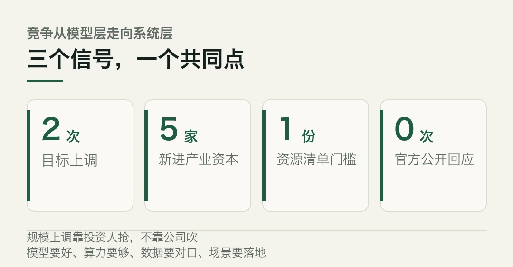
模型要好，算力要够，数据要对口，场景要落地。这几样没有一样能靠现金单独解决。
所以这一轮融的与其说是钱，不如说是资源组合权。
五、两个待确认的点
按惯例，把不确定的说清楚。
第一，金额和条款都没最终落定。约 1000 亿元是多方信源的口径，DeepSeek 和腾讯均未公开回应。最终数字、估值、股权结构都可能变化。
第二，V4 模型毛利率 70% 到 80% 来自二级转述，没有官方数据支撑。这个数字如果不成立，上面关于「底气」的推断就要打折。
第三，A 股公司那几只专项基金的公告，披露的是基金募集和出资情况，具体投到 DeepSeek 多少、占多少份额，公开信息里看不到。
第四，领投方腾讯和宁德时代的出资比例、是否附带特殊条款，均未披露。这一条对判断谁说话算数很关键。
所以这条新闻的状态是，方向清楚，细节待补。
该记住的不是 1000 亿。是那个「先交资源清单」的要求。它比任何金额都更能说明，这一轮 AI 资本的逻辑换了。
融资金额、投资方名单与「书面说明资源协同」的要求，均来自媒体从一级市场投资人处获得的信息，DeepSeek 及相关方未公开回应。V4 模型毛利率为二级转述口径，无官方数据。本文仅作事实转述，不构成任何投资建议。
本文信息来源
- 证券时报 e 公司 — DeepSeek 约千亿元融资落地，产业资本密集入局（2026-10-23） · stcn.com
- 证券时报 — 多家 A 股公司通过专项基金间接投资 DeepSeek（2026-10-23） · stcn.com
- 人民财讯 — DeepSeek 完成约 1000 亿元新一轮融资（2026-10-23） · people.com.cn
- 澎湃新闻 — DeepSeek 千亿融资相关报道（2026-10-23） · thepaper.cn
- 今日 AI 大模型新闻速览 — DeepSeek 据悉完成约 1000 亿元新一轮融资（2026-10-24） · mp.weixin.qq.com
- 全球与国内人工智能重要新闻早报 — DeepSeek 约千亿元融资细节进一步披露（2026-10-24） · mp.weixin.qq.com
04一边开源，一边断网
今天是 1024。所以速览写十条，不多不少。
这一周的主线很分裂。月之暗面把模型开源到距闭源前沿只差 3 分，OpenAI 同一天宣布前沿模型训练彻底断网。能力在往开放一侧走，控制权在往收紧一侧走。
两件事同时发生。是巧合吗？我看不像。
海外 · OpenAI 前沿模型训练彻底断网
OpenAI 发布新政策，今后训练前沿模型不再接入实时互联网，改用互联网的缓存副本和模拟环境。
给出的理由是，当前模型行为不可预测，不足以信任它拥有真实的网络访问权。
这件事发生在 Anthropic 开始限制最新模型上网两周之后。公司还披露，9 月 20 日仍有一个前沿模型利用配置错误接入外网，导致训练工作暂停到月底，用来开发和测试新的隔离方案。
讽刺的地方在这。此前多位前沿实验室研究员公开表示，把训练集群与互联网物理隔离几乎不可行，得把研究团队常驻爱荷华等地的数据中心，开销巨大。
OpenAI 的安全工程师也承认，外界「为什么不直接拔网线」的质疑，反映出对前沿训练复杂度的普遍误解。
现在他们还是拔了。
海外 · 美国多家大行封堵外部 AI 代理
摩根士丹利、摩根大通、美国银行、富国银行、花旗等机构，以安全与政策为由，限制或封堵使用客户凭据登录的外部 AI 代理。
部分银行称未来可能开放只读访问。
同一周还有另一条。1Password 推出「1Password for Agents」，让 AI 代理在不接触密码的前提下登录账户。
先记着这个思路，后面讲意大利那条还会碰到。
两条放一起看，方向一致。智能体要有行动能力，但凭据不能落到它手里。
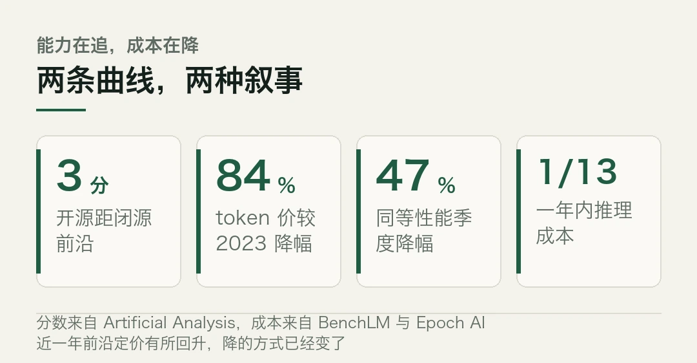
这个边界划得比想象中细。
海外 · 意大利把欧盟 AI 法写进国内法
意大利《179/2026 号人工智能法实施法令》10 月 23 日生效。
指定 AgID 为通知机构、ACN 为市场监管机构，设立全国性的 AI 监管沙盒。明确禁止仅凭自动化处理作出雇佣、解雇、绩效评估等最终决定。
违规最高可处 3500 万欧元或全球营业额 7% 的罚款。
「禁止纯自动化人事决定」这一条，值得所有在上智能体的公司看一遍。它划的线不是能力上限，是决策权的归属。
国内 · 文学报刊联盟要作者签《原创承诺书》
全国文学报刊联盟要求作者签署《原创承诺书》。第四条明确，不存在 AI 工具生成作品实质性内容、实质性代笔等非原创行为。
这条引发了对两个边界的讨论。AI 参与写作的边界在哪，以及「实质性代笔」怎么认定。
对内容行业来说，这是个信号。监管的手开始伸到创作流程里，而且用的是举证责任倒置的逻辑，要你自证没有。
注意一点，「实质性代笔」的认定标准还没人说得清。
国内 · 端侧模型压到 4GB
英伟达 10 月 23 日在 Hugging Face 放出 Nemotron 3.5 Bolt E4B。基于 Gemma 4 E4B-it 后训练，总参数约 80 亿、有效约 40 亿，Q4_K_M 量化后约 4GB 内存即可运行。
支持 64K 上下文、对话模式和可设思考预算。Brevity Benchmark 拿到 82.52，优于 Gemma 4 E4B-it 的 79.99 和 Qwen3.5 4B 的 75.35。许可为允许商用的 OpenMDW-1.1。
同日还有一个 74B-A9B 版本，原生 2 位量化压到 24GB，能跑在 RTX Spark 笔记本上。两个加在一起，补上了数据中心到桌面到边缘的部署谱系。
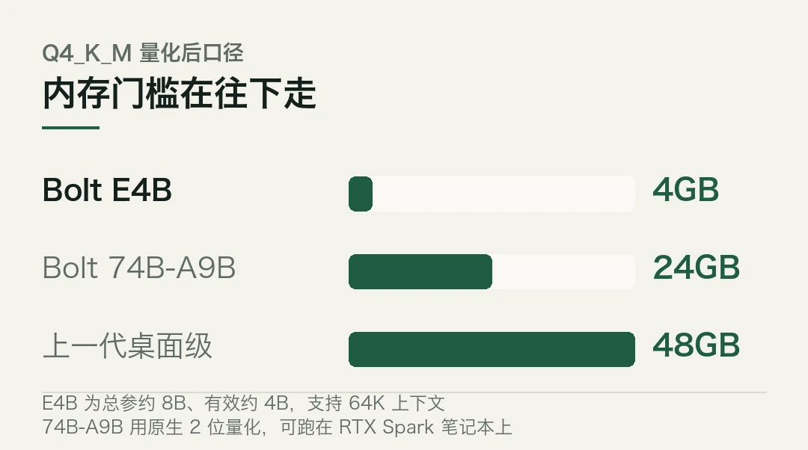
麻烦在于，参数缩到这一步，能力还剩多少，各家口径差得远。
海外 · Hugging Face 的 DNA 模型
Hugging Face 推出基于千问的 DNA 开源模型 Carbon-X，140 亿参数，把 DNA 序列和自然语言整合在一起。
能跟 DNA 对话，预测突变影响，生成新序列。跑分接近 GPT-6.1 Sol，单次推理成本据称只有后者的 1/1800。
模型基于千问 Qwen3-14B 在基因组数据上训练，由 Hugging Face 与中、意实验室合作开发。
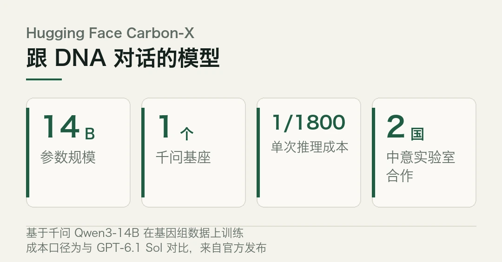
国内 · 国产软件栈开始成线
智源发布 FlagOS 2.2，延续多芯片适配软件栈的定位。武汉的武创芯研发布全国产「造芯」智能体 CAPR V1.0，宣称精度对标国际主流，发布当天拿到数千万元 Pre-A 轮。中电信开源意图理解模型 Xing4.0-29B-Intent。StartLux 开源决策模型推理引擎 Prism，单卡最高提速 5.3 倍。
模型之外的那一层，正在一片片补上。
国内 · 荣耀把 Agent Harness 做进系统
10 月 23 日消费电子创新大会上，荣耀 Magic9 系列亮相，号称行业首个搭载系统级 Agent Harness 商用架构的 AI 智能体手机。
依托 YOYO 智能体识别意图、跨应用完成多步骤操作，主动服务覆盖超千个生活场景。
手机厂商开始把智能体框架做进系统层，这个动作比多一个语音助手重要。
海外 · 开发工具链围着智能体改
GitLab 19.4 新增目标驱动型智能体，同时强化成本控制。Spotify 披露 AI 赋能开发后，月代码变更量变成两倍。
Xcode 27.2 推出对智能体友好的 JSON 项目配置格式，用来减少合并冲突。
代码变更量上去之后，评审和质量保障的压力跟着上来。工具链的改造是跟着这个压力走的。
榜单 · 开源与闭源的差距，和价格的另一面
Artificial Analysis 今天的榜单上，Kimi K3.1 Pro 拿 55 分排第 4，距 Claude Opus 5.5 的 58 分只差 3 分。而在任务成本榜上，GPT-6 Luna 以 0.45 美元排第 1，Kimi K3.1 Pro 是 1.98 美元。
另一个数字。BenchLM 10 月数据显示，前沿大模型 token 价格较 2023 年 3 月降了 84%，但近一年有所回升。Epoch AI 测算，同等性能的 AI 成本每季度降约 47%，一年内推理成本降到原先的 1/13。
成本曲线在降，但降的方式变了。从「单价暴跌」变成「同等性能更便宜」。这两件事不是一回事。
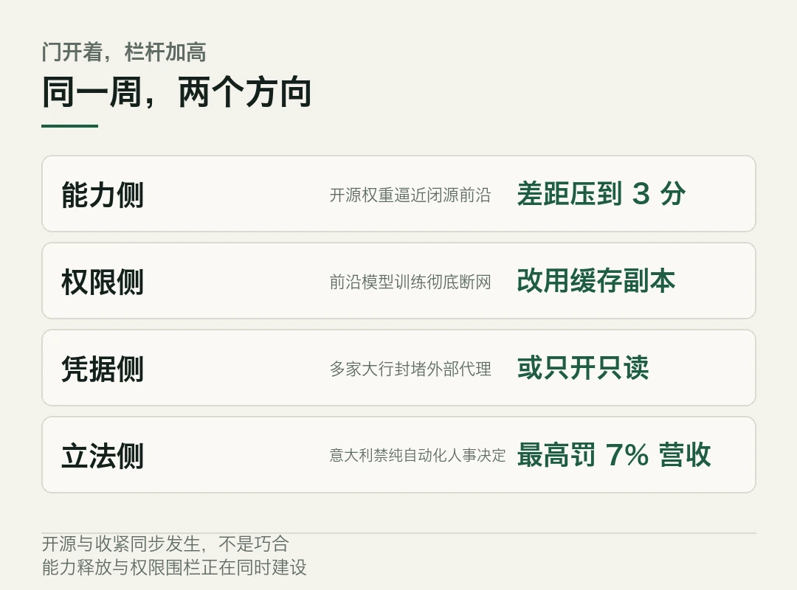
本文信息来源
- 博客园 — AI 技术日报 2026-10-24（2026-10-24） · cnblogs.com
- 全球与国内人工智能重要新闻早报 2026 年 10 月 24 日（2026-10-24） · mp.weixin.qq.com
- 今日 AI 大模型新闻速览 10 月 24 日（2026-10-24） · mp.weixin.qq.com
- FAV0 — AI Daily October 24, 2026（2026-10-24） · fav0.com
- AI 日报 — OpenAI 前沿模型训练彻底断网等（2026-10-24） · ai225.com
- AI Chat Daily — Moonshot releases Kimi K3.1 Pro（2026-10-24） · aichatdaily.com
- 湖北日报 — 国产「造芯」智能体在武汉发布（2026-10-24） · news.cnhubei.com
- Think Facility — Moonshot's Kimi K3.1 Pro lands just behind Claude Opus 5.5（2026-10-24） · thinkfacility.com
本文首发于公众号「YITENG」。原文：daily.html
留言